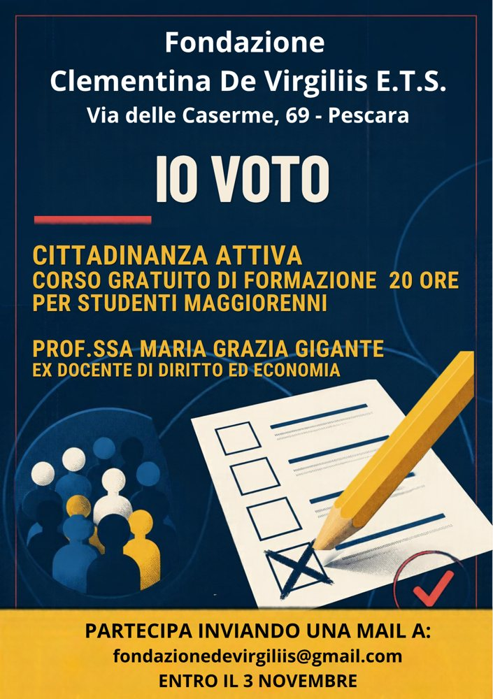

Prossima attività
Formazione, informazione e borse di studio
Io voto · Cittadinanza attiva
Corso gratuito di formazione di 20 ore per studenti maggiorenni, da novembre 2026 ad aprile 2027
Se sei maggiorenne e vuoi saperne di più sull'esercizio del voto, iscriviti a questo corso gratuito, tenuto dalla Prof.ssa Maria Grazia Gigante, ex docente di Diritto ed Economia.
- Massimo 25 iscritti: verranno accolte solo le prime 25 iscrizioni
- Attestato di partecipazione da presentare a scuola
- Primo incontro martedì 10 novembre alle ore 15:00
Come iscriversi: entro martedì 3 novembre scrivi a fondazionedevirgiliis@gmail.com indicando nome, cognome, classe, sezione e indirizzo liceale. Riceverai una mail di conferma.
Calendario del corso
Tutti gli incontri sono di martedì
Novembre
2026
- 10
- 17
Dicembre
2026
- 1
Gennaio
2027
- 12
- 26
Febbraio
2027
- 16
- 23
Marzo
2027
- 2
- 16
Aprile
2027
- 6
Primo incontro 10 novembre, ore 15:00